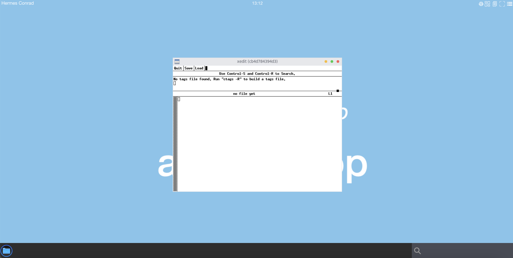

How to create containerised application from scratch for troubleshooting
Requirements
envsubstcommand preinstalled. Common Linux systems haveenvsubstpreinstalled
Goals
- Create a new containerised application from scratch using pod volume mapping
- Start a pod and get a shell inside container as user
root. Run xedit application asroot - Start a pod and get a shell inside container as user
hermes. Run xedit application ashermes
Create an application using a new container
We are starting a new containerised application from a fresh ubuntu:20.04 image and bind the X11 socket to use the pod DISPLAY.
We start a new container one as root, and another one as current user hermes
Start a new abcdesktop session
Open a web browser and go to abcdesktop service url
Login in as hermes
In the example we use LDAP authentification.

The login is Hermes Conrad, the password is hermes

Get hermes's pod variables: name, uid, XAUTH_KEY
Get a shell to your host. All next command use a host shell.
Get the hermes's pod name
To read the hermes pod name, MIT-MAGIC-COOKIE-1, and uid
kubectl get pod -l=access_userid=hermes -o jsonpath='{.items[0].metadata.name}' -n abcdesktop
We save this value in the pod variable, for next usage
POD=$(kubectl get pod -l=access_userid=hermes -o jsonpath='{.items[0].metadata.name}' -n abcdesktop)
echo $POD
You should read on stdout
hermes-da0ca3c8-48ba-4736-85a9-d3fd2c85f009
We save this value in the $POD for a next usage.
Get the hermes's XAUTH_KEY
The release 3.0 need the MIT-MAGIC-COOKIE-1 to reach the x11 DISPLAY.
Run the command echo $XAUTH_KEY to read the $XAUTH_KEY value inside the hermes's pod
export XAUTH_KEY=$(kubectl exec -n abcdesktop -it $POD -- bash -c 'echo $XAUTH_KEY')
Defaulted container "x-planet-hermes" out of: x-planet-hermes, c-planet-hermes, f-planet-hermes, o-planet-hermes, hermes-conrad-xterm-9e2589dc0da0473da8e33d3ab98abedc (ephem), i-planet-hermes (init)
The XAUTH_KEY variable is exported for a next usage.
echo $XAUTH_KEY
306908f8e4d4768c7595ce5ad53479
Get the hermes's pod uid
kubectl get pod -l=access_userid=hermes -o jsonpath='{.items[0].metadata.uid}' -n abcdesktop
We save this value in the PODUID exported variable, for next usage
export PODUID=$(kubectl get pod -l=access_userid=hermes -o jsonpath='{.items[0].metadata.uid}' -n abcdesktop)
echo $PODUID
c6d2f8a7-eb7d-4a25-9a9c-9778ca9e35cf
Inspect the Hermes's pod to look for Binding volume mapping
List files in /var/lib/kubelet/pods/$PODUID
The default kubelet's pod directory is /var/lib/kubelet/pods/. If you change it during the installation process replace /var/lib/kubelet/pods/ by your own directory.
ls -la /var/lib/kubelet/pods/$PODUID/volumes/kubernetes.io~empty-dir/x11socket
ls -la /var/lib/kubelet/pods/$PODUID/volumes/kubernetes.io~empty-dir/x11socket
total 4
drwxrwxrwt 2 root root 60 Dec 8 19:43 .
drwxr-xr-x 9 root root 4096 Dec 8 19:43 ..
srwxrwxrwx 1 1051 2051 0 Dec 8 19:43 X0
X0 is a file unix socket, we will bind the X0 socket in the next podapp.
Get the hermes's pod home-hermes volume location
kubectl get pod -l=access_userid=hermes -o jsonpath='{.items[0].spec.volumes[?(@.name=="home-hermes")].hostPath.path}' -n abcdesktop
Description of this query
- items[0] is the first entry of the pod list.
- spec.volumes is an array
- read all entries in spec.volumes where the @.name=="home-hermes" and return .hostPath.path
We save this value in the PODHOME exported variable, for next usage
export PODHOME=$(kubectl get pod -l=access_userid=hermes -o jsonpath='{.items[0].spec.volumes[?(@.name=="home-hermes")].hostPath.path}' -n abcdesktop)
Check the value with a echo
echo $PODHOME
/tmp/hermes-conrad
Start a new container from ubuntu:20.04
Now we've got the all volumes path and XAUTH_KEY, let's start a new container with mounted volume
- to the X11 socket
/var/lib/kubelet/pods/$PODUID/volumes/kubernetes.io~empty-dir/x11socket:/tmp/.X11-unix - to the user
homedir$PODHOME:/home/balloon
Create container in the pod sandbox with config file
We use envsubst to replace variable content in a template yaml file.
Some systems have gettext with envsubst preinstalled. However, if it is missing, you can install it using a package manager. For macOS you can use homebrew:
brew install gettext
The variables ${PODUID}, ${PODHOME} and ${XAUTH_KEY} are exported.
Make sure to use export, otherwise your variables are considered shell variables and might not be accessible to
envsubst
Create a file podapp.template.yaml
apiVersion: v1
kind: Pod
metadata:
name: podapp
namespace: abcdesktop
spec:
volumes:
- name: x11socket
hostPath:
# x11 directory location on host ${PODUID}
path: /var/lib/kubelet/pods/${PODUID}/volumes/kubernetes.io~empty-dir/x11socket
# this field is optional
type: Directory
- name: home
hostPath:
# home directory location on host
path: ${PODHOME}
# this field is optional
type: Directory
containers:
- name: abccontainer
image: ubuntu:20.04
command: ["/bin/sleep"]
args: ["1d"]
volumeMounts:
- mountPath: /tmp/.X11-unix
name: x11socket
- mountPath: /home/hermes
name: home
env:
- name: XAUTH_KEY
value: ${XAUTH_KEY}
Run the envsubst command to replace ${PODUID}, ${PODHOME} and ${XAUTH_KEY}
envsubst < podapp.template.yaml > podapp.yaml
Dump the podapp.yaml file content, and check that the volumes are set with the new values.
# cat podapp.yaml
apiVersion: v1
kind: Pod
metadata:
name: podapp
namespace: abcdesktop
spec:
volumes:
- name: x11socket
hostPath:
# directory location on host
path: /var/lib/kubelet/pods/c6d2f8a7-eb7d-4a25-9a9c-9778ca9e35cf/volumes/kubernetes.io~empty-dir/x11socket
# this field is optional
type: Directory
- name: home
hostPath:
# directory location on host
path: /tmp/hermes-conrad
# this field is optional
type: Directory
containers:
- name: abccontainer
image: ubuntu:20.04
command: /bin/sleep 1d
volumeMounts:
- mountPath: /tmp/.X11-unix
name: x11socket
- mountPath: /home/hermes
name: home
Create the application pod
kubectl apply -f podapp.yaml
pod/podapp created
Check that your pod podapp is Running
kubectl get pods podapp -n abcdesktop
NAME READY STATUS RESTARTS AGE
podapp 1/1 Running 0 32s
Get a shell in podapp
You get a shell command inside the container.
kubectl exec -it podapp -n abcdesktop -- bash
for release 3.0 set the MIT-MAGIC-COOKIE-1
apt-get update && apt-get install -y xauth
export DISPLAY=:0.0
echo $XAUTH_KEY
xauth add $DISPLAY MIT-MAGIC-COOKIE-1 $XAUTH_KEY
You can read on stdout
root@podapp:/# export DISPLAY=:0.0
root@podapp:/# echo $XAUTH_KEY
306908f8e4d4768c7595ce5ad53479
root@podapp:/# xauth add $DISPLAY MIT-MAGIC-COOKIE-1 $XAUTH_KEY
xauth: file /root/.Xauthority does not exist
root@podapp:/#
The file /root/.Xauthority does not exist, it has been created.
Install your X11 applications
For example, I choose to install the x11-apps package
Replace x11-apps by your own application
apt-get install -y x11-apps
Start your X11 application
To start the X11 application, just run it. Your DISPLAY is set to :0.0, (for release 3.0, you've already added the MIT-MAGIC-COOKIE-1).
But remember you a running a container as root, and all commands are running as root inside the container.
Start xedit
xedit
Go back to your web browser.
A new x11 window xedit should be present on your display

xedit doesn't write any error message in the bash container.
You've get a shell inside a container to run and start any application. You can also install and start any others applications.
To clean the running pod podapp
kubectl delete pods podapp -n abcdesktop
Start a new container from ubuntu:20.04 as hermes
To start a new container from ubuntu:20.04 as hermes, we have to add the localaccount secret volume to the previous container
Read the securityContext from the hermes pod
export PODRUNASUSER=$(kubectl get pods -l=access_userid=hermes -o json -n abcdesktop | jq -r '.items[0].spec.securityContext.runAsUser')
export PODRUNASGROUP=$(kubectl get pods -l=access_userid=hermes -o json -n abcdesktop | jq -r '.items[0].spec.securityContext.runAsGroup')
Check the uidNumber and the gidNumber values
echo PODRUNASUSER:$PODRUNASUSER PODRUNASGROUP:$PODRUNASGROUP
PODRUNASUSER:1051 PODRUNASGROUP:2051
Create a file hermespodapp.template.yaml
apiVersion: v1
kind: Pod
metadata:
name: hermespodapp
namespace: abcdesktop
spec:
securityContext:
runAsUser: ${PODRUNASUSER}
runAsGroup: ${PODRUNASGROUP}
volumes:
- name: x11socket
hostPath:
# x11 directory location on host ${PODUID}
path: /var/lib/kubelet/pods/${PODUID}/volumes/kubernetes.io~empty-dir/x11socket
# this field is optional
type: Directory
- name: home
hostPath:
# home directory location on host
path: ${PODHOME}
# this field is optional
type: Directory
- name: localaccount
hostPath:
# localaccount directory location on host
path: /var/lib/kubelet/pods/${PODUID}/volumes/kubernetes.io~secret/auth-localaccount-hermes
# this field is optional
type: Directory
containers:
- name: hermescontainer
image: ubuntu:20.04
command: ["/bin/sleep"]
args: ["1d"]
volumeMounts:
- mountPath: /tmp/.X11-unix
name: x11socket
- mountPath: /home/hermes
name: home
- mountPath: /var/secrets/abcdesktop/localaccount
name: localaccount
env:
- name: XAUTH_KEY
value: ${XAUTH_KEY}
Create your hermespodapp.yaml file from the previous template
envsubst < hermespodapp.template.yaml > hermespodapp.yaml
Look at your hermespodapp.yaml
cat hermespodapp.yaml
apiVersion: v1
kind: Pod
metadata:
name: hermespodapp
namespace: abcdesktop
spec:
securityContext:
runAsUser: 1051
runAsGroup: 2051
volumes:
- name: x11socket
hostPath:
# x11 directory location on host c6d2f8a7-eb7d-4a25-9a9c-9778ca9e35cf
path: /var/lib/kubelet/pods/c6d2f8a7-eb7d-4a25-9a9c-9778ca9e35cf/volumes/kubernetes.io~empty-dir/x11socket
# this field is optional
type: Directory
- name: home
hostPath:
# home directory location on host
path: /tmp/hermes-conrad
# this field is optional
type: Directory
- name: localaccount
hostPath:
# localaccount directory location on host
path: /var/lib/kubelet/pods/c6d2f8a7-eb7d-4a25-9a9c-9778ca9e35cf/volumes/kubernetes.io~secret/auth-localaccount-hermes
# this field is optional
type: Directory
containers:
- name: hermescontainer
image: ubuntu:20.04
command: ["/bin/sleep"]
args: ["1d"]
volumeMounts:
- mountPath: /tmp/.X11-unix
name: x11socket
- mountPath: /home/hermes
name: home
- mountPath: /var/secrets/abcdesktop/localaccount
name: localaccount
env:
- name: XAUTH_KEY
value: 306908f8e4d4768c7595ce5ad53479
Create the hermespodapp
kubectl apply -f hermespodapp.yaml
pod/hermespodapp created
To install the x11 application package, we need a root access to the pod/hermespodapp. We use runc to get a rooted shell.
Read the containerID of the pod hermespodapp
CONTAINER=$(kubectl -n abcdesktop get pod hermespodapp -o jsonpath="{.status.containerStatuses[].containerID}" |sed 's/.*\/\///')
Get the shell with runc command
runc --root /run/containerd/runc/k8s.io/ exec -t -u 0 $CONTAINER bash
groups: cannot find name for group ID 2051
root@hermespodapp:/#
This is correct group ID 2051 does not exit. Let's patch your file system with hermes credentials
- /etc/passwd
- /etc/group
- /etc/shadow
- /etc/gshadow
rm -f /etc/passwd && ln -s /var/secrets/abcdesktop/localaccount/passwd /etc/passwd
rm -f /etc/group && ln -s /var/secrets/abcdesktop/localaccount/group /etc/group
rm -f /etc/shadow && ln -s /var/secrets/abcdesktop/localaccount/shadow /etc/shadow
rm -f /etc/gshadow && ln -s /var/secrets/abcdesktop/localaccount/gshadow /etc/gshadow
Now your files are updated. You can exit, and reopen a bash to your container
root@hermespodapp:/# exit
# runc --root /run/containerd/runc/k8s.io/ exec -t -u 0 $CONTAINER bash
root@hermespodapp:/#
The error message does not appear anymore.
Install your X11 applications as root
apt-get update && apt-get install -y x11-apps
Quit the root session
exit
Start your X11 application as hermes
Start a new session to the pod hermespodapp
kubectl -n abcdesktop exec -it hermespodapp -- bash
You get a shell prompt as as hermes. Check the hermes homedirectory and id number
hermes@hermespodapp:/$
hermes@hermespodapp:/$ cd
hermes@hermespodapp:~$ pwd
/home/hermes
hermes@hermespodapp:~$ id
uid=1051(hermes) gid=2051(hermes) groups=2051(hermes)
Export the var DISPLAY and start the edit application. You don't need to create the .Xauthority file.
/home/hermes is already mounted as a volume.
hermes@hermespodapp:~$ export DISPLAY=:0.0
hermes@hermespodapp:~$ xedit &
[1] 699
This process is running as hermes :
hermes@hermespodapp:~$ ps -ef
UID PID PPID C STIME TTY TIME CMD
hermes 1 0 0 15:57 ? 00:00:00 /bin/sleep 1d
hermes 690 0 0 16:47 pts/0 00:00:00 bash
hermes 699 690 0 16:48 pts/0 00:00:00 xedit
hermes 700 690 0 16:49 pts/0 00:00:00 ps -ef
Go back to your web browser.
A new x11 window xedit should be present on your display

The name of the edit window is the name of your pod
(hermespodapp).
To clean the running pod hermespodapp
kubectl delete -f hermespodapp.yaml
You have created a pod to run an X11 application as a user in LDAP Directory. You get a root shell inside the pod, to patch, update or install other applications.